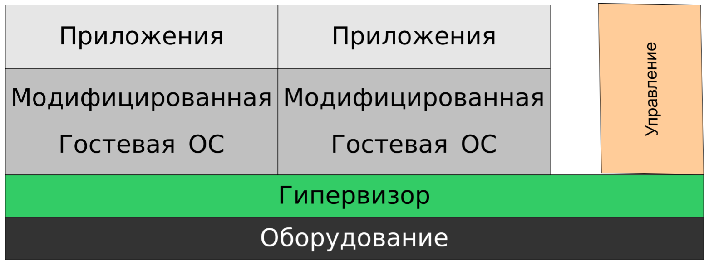
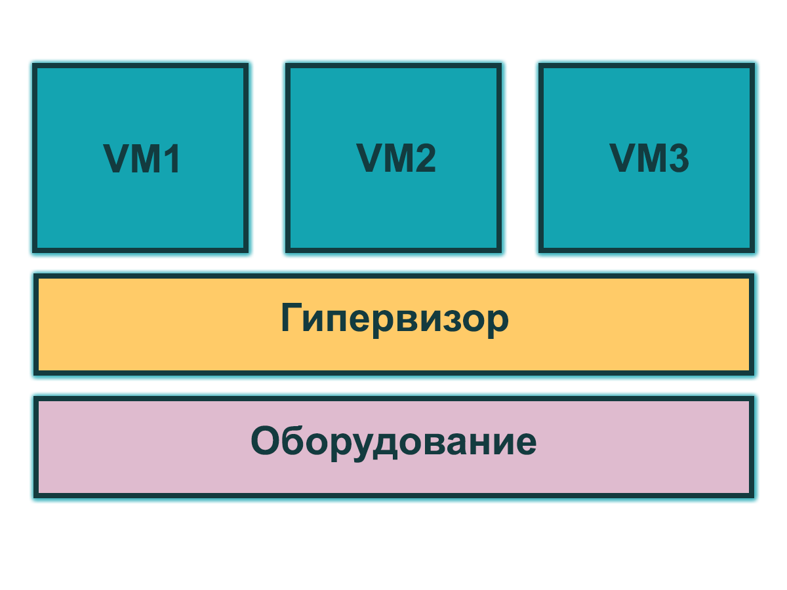
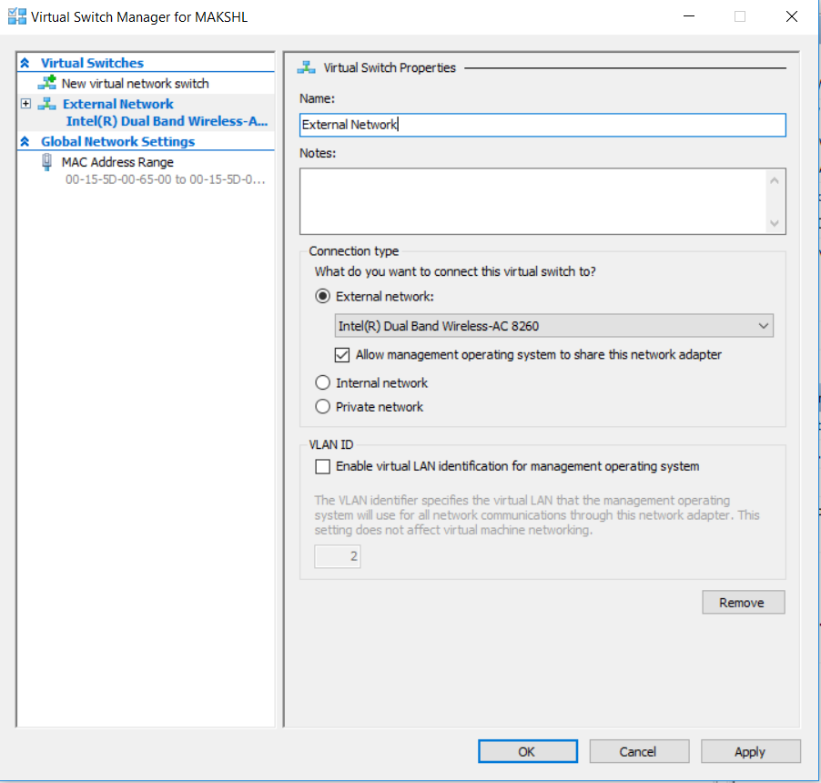
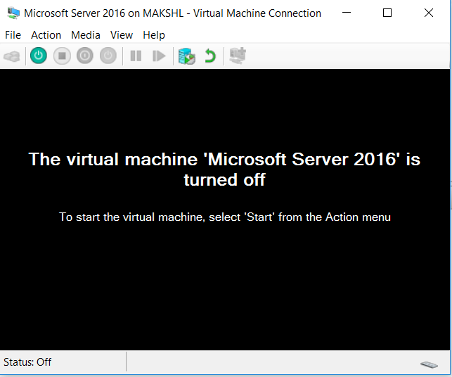

Платформы виртуализации
Облачные технологии
Гладкий Максим Валерьевич / github:MaksHladki
Содержание лекции
Виртуализация
Виртуализация
Виртуализация — предоставление набора вычислительных ресурсов или их логического объединения, абстрагированное от аппаратной реализации, и обеспечивающее при этом логическую изоляцию друг от друга вычислительных процессов, выполняемых на одном физическом ресурсе
ИЛИ
Технология виртуализации позволяет создать несколько виртуальных машин на одном физическом компьютере и совместно использовать его ресурсы в нескольких средах
Преимущества виртуализации
- Запуск несольких ВМ
- Выполнение нескольких приложений в изолированной среде
- Увеличиение эффективности использования вычислительных ресурсов
- Сокращение затрат на приобретение и поддержку оборудования
- Облегчение процесса администрирования системы
- Сокращение штата IT-сотрудников
- Клонирование и резервирование
Области применения виртуализации
- Виртуальные машины - полностью изолированный программный контейнер, который работает с собственной ОС и приложениями, подобно физическому компьютеру
- Виртуализация ресурсов - разделение одного физического узла на несколько частей, каждая из которых видна для владельца в качестве отдельного сервера
- Виртуализация приложений - процесс использования приложения, преобразованного из требующего установки в операционную систему в не требующее (требуется только запустить). ПО виртуализатора определяет при установке виртуализуемого приложения, какие требуются компоненты ОС, и эмулирует их
Виды виртуализации
- Полная виртуализация оборудования (эмуляция)
- Операционные системы
- Программное обеспечение - работа отдельных приложений в среде, отделённой от основной ОС
- Память - объединением оперативной памяти из различных ресурсов в единый массив, либо изоляция адресного пространства приложения от всего адресного пространства
- Хранилище данных - виртуализация хранения данных, представление набора физических носителей в виде единого физического носителя
- База данных - представление данных в абстрактном виде, независимо от нижележащих систем управления и хранения данных, а также их структуры
- Сеть - процесс объединения аппаратных и программных сетевых ресурсов в единую виртуальную сеть
Классы виртуализации
- Аппаратная виртуализация
- Программная виртуализация
Аппаратная виртуализация
Определение
Аппаратная виртуализация — виртуализация с поддержкой специальной процессорной архитектуры. Возможно использование изолированных гостевых систем, управляемых гипервизором напрямую. Гостевая система не зависит от архитектуры хостовой платформы и реализации платформы виртуализации. В режиме поддержки виртуализации запускается специальное программное обеспечение, являющееся «легковесной» прослойкой между гостевыми операционными системами и оборудованием – монитор виртуальных машин (Virtual Machine Monitor)
Схема
Преимущества
- Упрощение разработки программных платформ виртуализации за счет предоставления аппаратных интерфейсов управления и поддержки виртуальных гостевых систем
- Управление виртуальными гостевыми системами осуществляет напрямую небольшой промежуточный слой программного обеспечения, гипервизор, что дает увеличение быстродействия
- Улучшается защищенность - возможность переключения между несколькими запущенными независимыми платформами виртуализации на аппаратном уровне. Каждая из ВМ работает независимо в своем пространстве аппаратных ресурсов, полностью изолированно друг от друга
Преимушества
- Гостевая система становится не привязана к архитектуре хостовой платформы и к реализации платформы виртуализации.
- Технология аппаратной виртуализации делает возможным запуск 64-битных гостевых систем на 32-битных хостовых системах
- Интерфейс монитора виртуальных машин полностью (либо частично) повторяет интерфейс виртуализуемой системы, поэтому, ПО не может определить факт присутствия гипервизора
Пример решений
- Intel Virtualization Technology
- AMD Virtualization
Программная виртуализация
- Программная полная виртуализация
- Программная паравиртуализация
- Виртуализации уровня операционной системы
Программная полная виртуализация
Представляет собой полную эмуляцию оборудования на уровне программного обеспечения путем модфификации команд гипервизором (динамической трансляции) - проблемные команды гостевой ОС перехватываются гипервизором. После того как эти команды заменяются на безопасные, происходит возврат управления гостевой системе
Схема
Особенности
- Возможность реализовать виртуализацию проприетарных операционных систем (Windows, MacOS), где нет возможности модифицировать ядро системы
- Полная трансляция и модификация бинарного кода — весьма ресурсоемкая операция
- Невысокая производительность
Основные компоненты
- Приложение виртуальной машины
- Драйвер виртуальных машин
- Монитор виртуальной машины
Программная паравиртуализация
Определение
Паравиртуализация — техника виртуализации, при которой гостевые операционные системы подготавливаются для исполнения в виртуализированной среде, для чего их ядро незначительно модифицируется. Операционная система взаимодействует с программой гипервизора, который предоставляет ей гостевой API, вместо использования напрямую таких ресурсов, как таблица страниц памяти
Особенности
- Более высокая производительность, чем метод динамической трансляции
- Требуется модифицированное ядро (для тех комманд, что не поддаются виртуализизации)
- Для модификации ядра нужны его исходные коды, либо гипервизор и гостевая ОС должны быть разработаны одним производителем
Схема
Виртуализации уровня операционной системы
Определение
Виртуализация на уровне операционной системы — метод виртуализации, при котором ядро операционной системы поддерживает несколько изолированных экземпляров пространства пользователя, вместо одного. Эти экземпляры (контейнеры) с точки зрения пользователя полностью идентичны реальному серверу. А ядро обеспечивает полную изолированность контейнеров, поэтому программы из разных контейнеров не могут воздействовать друг на друга
Схема
Особенности
- Контейнеры выполняются на одном уровне с физическими серверами. Отсутствие виртуализованного оборудования и использование реального оборудования и драйверов позволяют получить непревзойденную производительность
- Каждый контейнер может масштабироваться до ресурсов целого физического сервера
- Технология виртуализации на уровне ОС позволяет добиться высочайшей плотности, среди доступных среди решений виртуализации. Возможно создание и запуск сотен контейнеров на одном обычном физическом сервере
- Контейнеры используют единую ОС, что делает их поддержку и обновление очень простым. Приложения могут быть также развернуты в отдельном окружении
Гипервизор
Гипервизор
Гипервизор – это платформа виртуализации, позволяющая запускать на одном физическом компьютере несколько операционных систем. Именно гипервизор предоставляет изолированное окружение для каждой виртуальной машины, и именно он предоставляет гостевым ОС доступ к аппаратному обеспечению компьютера
Типы гипервизора
- Гипервизор 1 типа
- Гипервизор 2 типа
- Гипервизор гибридный
Гипервизор 1 рода
Определение
Гипервизор 1 типа запускается непосредственно на физическом «железе» и управляет им самостоятельно. Гостевые ОС, запущенные внутри виртуальных машин, располагаются уровнем выше
Схема
Особенности
- Работает непосредственно с оборудованием (позволяет достичь большей производительности, надежности и безопасности)
- Имеет свои встроенные драйверы устройств, модели драйверов и планировщик
- Не зависит от базовой ОС
- Автономный, работает непосредственно в окружении усеченного ядра
Пример
- VMware ESX
- Citrix
- XenServer
Гипервизор 2 типа
Определение
Гипервизор второго типа (хостовый, монитор виртуальных машин) — специальный дополнительный программный слой, расположенный поверх основной хостовой ОС, который в основном выполняет функции управления гостевыми ОС, а эмуляцию и управление аппаратурой берет на себя хостовая ОС
Схема

Особенности
- Виртуальные машины запускаются в пользовательском пространстве хостовой ОС
- Более худший уровень производительности
Пример
- VMware Server
- VirtualBox
- VMware Workstation
- QEMU
- Parallels
Гипервизор гибридный
Определение
Объединенный вариант первых двух, в котором функции управления аппаратными средствами выполняются тонким гипервизором и специальной депривилегированной сервисной ОС, работающей под управлением тонкого гипервизора. Обычно гипервизор управляет напрямую процессором и памятью компьютера, а через сервисную ОС гостевые ОС работают с остальными аппаратными компонентами
Особенности
- Состоит из двух частей: из тонкого гипервизора, контролирующего процессор и память, а также работающей под его управлением специальной сервисной ОС в кольце пониженного уровня. Через сервисную ОС гостевые ОС получают доступ к физическому оборудованию
- Эффективен при высокой вычислительной нагрузке, когда используется только “тонкий” гипервизор, который в случае Microsoft занимает всего порядка 100 Кб оперативной памяти
Пример
- Sun Logical Domains
- Xen
- Citrix XenServer
- Microsoft Hyper-V
Архитектура гипервизоров
Монолитный гипервизор
Гипервизоры монолитной архитектуры включают драйверы аппаратных устройств в свой код. Гостевые ОС работают на виртуальных машинах поверх гипервизора. Когда гостевой системе нужен доступ к оборудованию, она должна пройти через гипервизор и его модель драйверов. Обычно одна из гостевых ОС играет роль администратора или консоли, в которой вы запускаете компоненты для предоставления ресурсов, управления и мониторинга всех гостевых ОС, работающих на компьютере
Схема

Преимущества
- Более высокая производительность из-за нахождения драйверов в пространстве гипервизора
- Более высокая надежность, так как сбои в работе управляющей ОС/Службы (Service Console) не приведет к сбою всех запущенных виртуальных машин
Недостатки
- Поддерживается только то оборудование, драйверы на которое имеются в гипервизоре
- Потенциально более низкая безопасность – из-за включения в гипервизор стороннего кода в виде драйверов устройств. Поскольку код драйверов выполняется в пространстве гипервизора, существует теоретическая возможность воспользоваться уязвимостью в коде и получить контроль как над хостовой ОС, так и над всеми гостевыми
Микроядерная архитектура
При микроядерной архитектуре драйверы устройств работают внутри хостовой ОС. Хостовая ОС в этом случае запускается в таком же виртуальном окружении, как и все ВМ, и именуется «родительской партицией». Все остальные окружения, соответственно – «дочерние»
Единственная разница между родительской и дочерними партициями состоит в том, что только родительская партиция имеет непосредственный доступ к оборудованию сервера. Выделением памяти же и планировкой процессорного времени занимается сам гипервизор
Схема
Преимущества
- Не требуются драйвера, «заточенные» под гипервизор. Гипервизор микроядерной архитектуры совместим с любым оборудованием, имеющим драйверы для ОС родительской партиции
- Поскольку драйверы выполняются внутри родительской партиции – у гипервизора остается больше времени на более важные задачи – управление памятью и работу планировщика
- Более высокая безопасность. Гипервизор не содержит постороннего кода, соответственно и возможностей для атаки на него становится меньше
Недостатки
- Проигрывает монолитной модели в производительности
Распространенные платформы виртуализации
- VMWARE (vSphere, One Cloud)
- CITRIX (Xen)
- Oracle VM (Virtual box)
- Microsoft (Hyper-V)
- Parallels (Parallels, OpenVZ)
Сравнение платформ виртуализации
Рынок гипервизоров
- VMWare - 62%
- Microsoft - 27%
- Citrix - 8%
- Другие производители - 3%
Масштабируемость
| Ресурсы | vSphere | XenServer | Hyper-V |
|---|---|---|---|
| Логические ЦП | 320 | 160 | 320 |
| Виртуальные ЦП на хост | 4096 | 4000 | 2048 |
| Виртуальные ЦП на ВМ | 64 | 16 | 64 |
| Физическая ОЗУ | 4ТБ | 1ТБ | 4ТБ |
| Озу на ВМ | 1ТБ | 128ГБ | 1ТБ |
| Максимум ВМ | 15000 | 1000 | 8000 |
Производительность
| Возможности | vSphere | XenServer | Hyper-V |
|---|---|---|---|
| Виртуальный Fibre Channel | Да | Да | Да |
| Количество адаптеров FC | 256 | 150 | 4 |
| Максимальный размер диска | 64 ТБ | 2 ТБ | 64 ТБ |
| Разгузка передачи данных | Да | Нет | Да |
| Динамическая память | Да | Да | Да |
| Качество обслуживания | Да | Нет | Да |
Механизмы отказоустоичивости
| Возможности | vSphere | XenServer | Hyper-V |
|---|---|---|---|
| Встроенный бекап | Да | Да | Да |
| Репликация ВМ | Да | Нет | Да |
| Мониторинг гостевых приложений | Да | Нет | Да |
| Обновление кластерных систем | Да | Да | Да |
| Шифрование дисков | Да | Нет | Да |
Hyper-V
История
- 2003 - Microsoft acquires Connectix
- 2004 - Miscrosoft Visrtual Server 2005
- 2005 - Microsoft Virtual Server 2005 R2
- 2008 - Microsoft Hyper-V Server 2008
- 2009 - Microsoft Hyper-V server 2008 R2
- 2011 - Microsoft Hyper-V server 2008 R2 SP1
- 2012 - Microsoft Hyper-V server 2012
- 2013 - Microsoft Hyper-V server 2012 R2
- 2016 - Microsoft Hyper-V server 2016
Типы виртуальных машин
- BIOS based architecture - Generation 1
- EFI based architecture - Generation 2
Два способа развертывания
- Как отдельная роль внутри ОС Windows
- Как самостоятельная ОС Windows Hyper-V Server
Архитектура Hyper-V
Общий вид

Особенности
- Гипервизор работает на следующем уровне после аппаратного обеспечения
- Уровнем выше гипервизора работают родительская и дочерние партиции
- Родительской партиции запускается хостовая ОС (Windows Server 2016) и стек виртуализации. Именно из родительской партиции происходит управление внешними устройствами, а так же дочерними партициями
- Дочерние партиции создаются из родительской партиции и предназначены для запуска гостевых ОС
- Все партиции связаны с гипервизором через интерфейс гипервызовов, предоставляющий операционным системам специальный API
Понятие партиции
Hyper-V поддерживает разграничение согласно понятию раздел (партиция). Раздел — логическая единица разграничения, поддерживаемая гипервизором, в котором работают операционные системы
- Hyper-V поддерживает разграничение согласно понятию партиция
- Каждый экземпляр гипервизора должен иметь одну родительскую партицию
Алгоритм работы виртуализации
- Стек виртуализации запускается на родительском разделе и обладает прямым доступом к аппаратным устройствам
- Родительский раздел порождает дочерние разделы, на которых и располагаются гостевые ОС, при помощи API гипервизова
- Дочерний раздел также может породить собственные дочерние разделы
Стек виртуализации
Cтек виртуализации - ряд компонент, располагающийся в родительском разделе и имеющих прямой доступ к аппаратному обеспечению хостового компьютера
- Служба управления виртуальными машинами (VMMS)
- Рабочие процессы виртуальных машин (VMWP)
- Виртуальные устройства
- Драйвер виртуальной инфраструктуры (VID)
- Библиотека интерфейсов гипервизора
Состояния ВМ для службы VMMS
- Starting
- Active
- Not Active
- Taking Snapshot
- Applying Snapshot
- Deleting Snapshot
- Merging Disk
Рабочий процесс виртуальной машины (VMWP)
Для управления виртуальной машиной из родительской партиции запускается особый процесс на уровне пользователя – рабочий процесс виртуальной машины
Для каждой запущенной виртуальной машины служба VMMS запускает отдельный рабочий процесс. Это позволяет изолировать виртуальные машины друг от друга. Для повышения безопасности, рабочие процессы запускаются под встроенным пользовательским аккаунтом Network Service
Возможности
- Создание, конфигурация и запуск виртуальной машины
- Приостановление и продолжение работы (Pause/Resume)
- Сохранение и восстановление состояния (Save/Restore State)
- Создание моментальных снимков (снапшотов)
- Эмулирует виртуальную материнскую плату (VMB), которая используется для предоставления памяти гостевой ОС, управления прерываниями и виртуальными устройствами
Виртуальные устройства
Виртуальные устройства (VDevs) – это программные модули, реализующие конфигурацию и управление устройствами для виртуальных машин. VMB включает в себя базовый набор виртуальных устройств, включающий в себя шину PCI и системные устройства
Типы устройств
- Эмулируемые устройства – эмулируют определенные аппаратные устройства (BIOS, DMA, APIC, шины ISA и PCI, контроллеры прерывании т.д.). Именно поэтому для загрузки гостевой ОС может использоваться только виртуальный IDE-контроллер, а не SCSI, который является синтетическим устройством
- Синтетические устройства – не эмулируют реально существующие аппаратное обеспечение (сетевой адаптер, SCSI-контроллер, синтетический контроллер прерывания и т.д.). Синтетические устройства могут использоваться только при условии установки компонент интеграции в гостевой ОС. Обращаются к аппаратным посредством провайдеров служб виртуализации (VMBus), работающих в родительской партиции, что намного быстрее, чем эмуляция физических устройств
Драйвер виртуальной инфраструктуры (VID)
Драйвер виртуальной инфраструктуры (vid.sys) работает на уровне ядра и осуществляет управление партициями, виртуальными процессорами и памятью. Так же этот драйвер является промежуточным звеном между гипервизором и компонентами стека виртуализации уровня пользователя
Библиотека интерфейса гипервизора
Библиотека интерфейса гипервизора (WinHv.sys) – это DLL уровня ядра, которая загружается как в хостовой, так и в гостевых ОС, при условии установки компонент интеграции. Эта библиотека предоставляет интерфейс гипервызовов, использующийся для взаимодействия ОС и гипервизора
Провайдеры служб виртуализации (VSP)
Провайдеры служб виртуализации работают в родительской партиции и предоставляют гостевым ОС доступ к аппаратным устройствам через клиент служб виртуализации (VSC). Связь между VSP и VSC осуществляется через виртуальную шину VMBus
Шина виртуальных машин (VMBus)
Предоставлении высокоскоростного доступа между родительской и дочерними партициями
Взаимодействие происходит по клиент-серверной модели. В родительской партиции запущены провайдеры служб виртуализации (VSP), а в дочерних партициях – клиентская часть – VSC. VSC перенаправляет запросы гостевой ОС через VMBus к VSP в родительской партиции, а VSP переадресовывает запрос драйверу устройства
Если гостевая ОС не поддерживает работу интеграционных компонент – приходится эмулировать устройство. Гипервизору приходится перехватывать вызовы гостевых ОС и перенаправлять их к эмулируемым устройствам (снижение производительности)
Разделы
Родительский раздел
- Родительский раздел создается системой в первую очередь, как только гипервизор начинает работу
- Родительский раздел используется для создания и управления дочерними разделами системы и включает WMI провайдера, предоставляющего интерфейс для удаленного администрирования
- Родительский раздел управляет и распределяет аппаратные ресурсы, за исключением процесса физического распределения памяти, который осуществляется гипервизором
- Аппаратные ресурсы родительского раздела являются общими для всех дочерних разделов
- Родительский раздел управляет питанием, "plug and play"-операциями и ведет журналы аппаратных сбоев
Схема
Дочерний раздел (child partition)
В рамках дочерних разделов функционируют гостевые операционные системы. Гипервизор первого типа поддерживает три основные типа дочерних разделов:
- С операционной системой семейства Windows и установленными компонентами интеграции
- С операционной системой, отличной от семейства Windows и с установленными компонентами интеграции
- С операционной системой, не поддерживающей компоненты интеграции
Архитектурные особенности
- Виртуализированные разделы не имеют ни доступа к физическому процессору, не могут управлять прерываниями
- Дочерние разделы не имеют непосредственного доступа к аппаратным ресурсам, но получают виртуальное представление ресурсов (виртуальные устройства)
- Любая попытка обращения к виртуальным устройствам перенаправляется через VMBus к устройствам родительского раздела, которые и обработают данный запрос
- Гипервизор может определять подмножество процессоров для каждого раздела
- Hyper-V может аппаратно ускорять трансляцию адресов между различными гостевыми виртуальными адресными пространствами при помощи I/O Memory Management Unit
- Виртуальные устройства поддерживают технологию Server Virtualization для накопителей, сетевых и графических подсистем
Особенности Hyper-V
Хранилище данных
- Поддержка Virtual Fiber Channel (доступ к Fiber Channel SAN из ВМ)
- Размер Virtual Hard Disk до 64 ТВ
- Offloaded Data Transfer (ODX) - повышает быстродействие используя SAN
Улучшенное управление ресурсами
- Улучшение Dynamic Memory (более высокий уровень консолидации ВМ)
- Resource Metering (лог истории использования ВМ)
- Quality of Service (QoS) (позволяет обеспечить SLA по производительности ВМ)
- Data Center Bridging (DCB) - объеденяет сетевой трафик для повышения QoS
Повышение уровня безопасности и изоляции
- Private Virtual LAN
- Защита от ARP Spoofing
- DHCP Guard Protection
- Virtual Port ACLs
- Trunk Mode to Virtual Machine
- Monitoring and Port Mirroroing
- Windows PowerShell / WMI Managment
- IPSec
- SR-IOV
- Dynamic Virtual Machine Queue
- Extensible Switch
Физическая безопасность
Bitloker encryption
- Шифрование локальных жестких дисков
- Шифрование кластерных дисков
- Шифрование Cluster Shared Volumes
- Изменение Volume level encryption
Уровни миграции ВМ
- Live Migration - бысрая миграция ВМ без ограничений
- Live Storage Migration - миграция дисков
- Shared-Nothing Live Migration - перенос ВМ между узлами и кластерами
Пример создания ВМ
Установка Hyper-V

Hyper-V Manager

Hyper-V Manager

Создание новой ВМ

Название и путь

Выбор типа
Размер ОП

Настройка сети

Virtual Hard Disk

Дополнительные опции

Создание сетевого подключения

Настройка параметров подключения
Настройки ВМ: hardware

Настройки ВМ: firmware

Настройки ВМ: security

Настройки ВМ: memory

Настройки ВМ: processor
Настройки ВМ: SCSI

Настройки ВМ: network
Запуск ВМ
Установка ОС
Результат установки

Спасибо за внимание